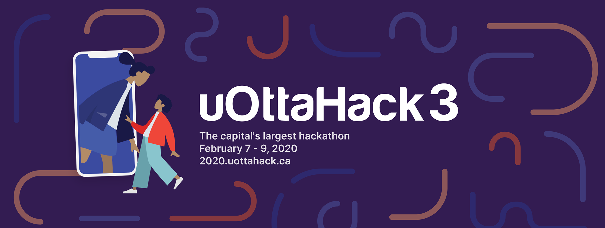
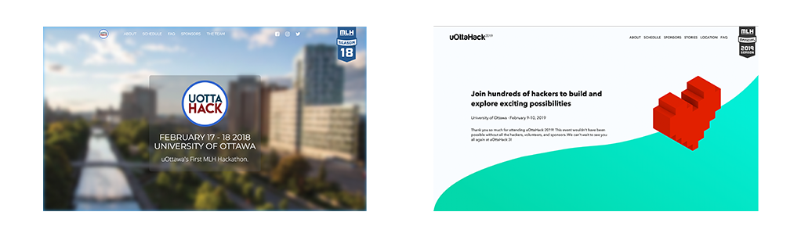
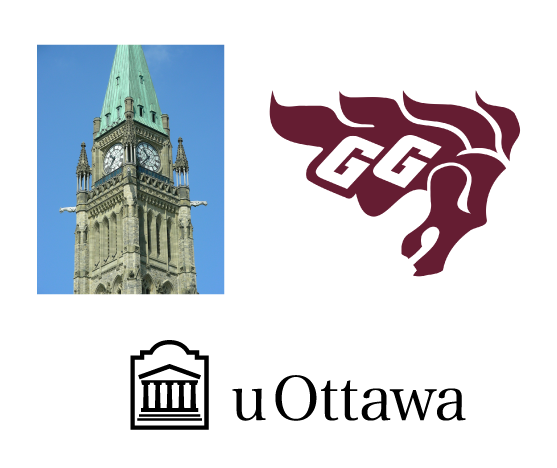
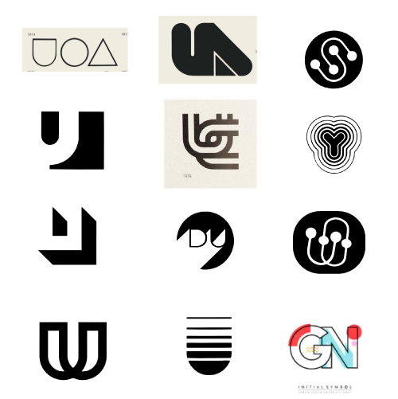
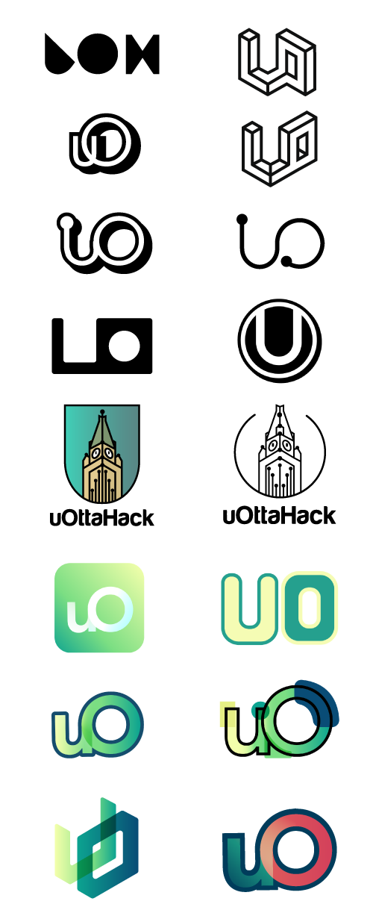

Role - Designer
Responsibilities - Redesign the brand, logo, website, swag, communication images
Project Length - 8 months
Team Members - 2 Designers: Munir Aljawahari & Alistair McCarten
The official banner of uOttaHack 2020.
uOttaHack is the University of Ottawa's largest ever hackathon, hosted by students for students of all studies across Canada. This year, uOttaHack 3 welcomed over 400 students from February 7th-9th to collaborate on projects, learn at workshops, and develop their innovative ideas. The uOttaHack committee decided to launch a rebrand that will represent this special uOttaHack and continue to represent the face of uOttaHack for years to come.
In previous years, uOttaHack was struggling to have a consistent design. In 2018, uOttahack..... In 2019, uOttaHack adopted a trendy isometric illustration theme to appeal to sponsors and hackers. We wanted to give uOttaHack a new logo and theme that would remain on trend throughout the years sustain through trends but also adapt to seem different every year.
Comparison of the 2018 homepage (left) and 2019 homepage (right) for uOttaHack.
We wanted to adopt a minimalistic look for uOttaHack while simultaneously integrating with the University. I started by analysing the current symbols of the university, followed by researching logos that revolve around the letter U.
The three main symbols related to the City of Ottawa and uOttawa.
My favorite logos that helped guide my design.
I went through many renditions of possible logos, however, none of the following felt right. Whenever I felt stuck on a certain design, I'd return to my notebook and continue sketching possible logos.
Proposed logos that were scrapped.
After much debate and iterations, the following final design was created:
The final logo.
The final color palette.
Purple was the base color for most designs. It was a dark color that allowed flexibility when choosing a secondary color to include. The addition of orange and peach to the color palette provided the much needed contrast. Lastly, the blue provided the needed transition between the purple and orange.